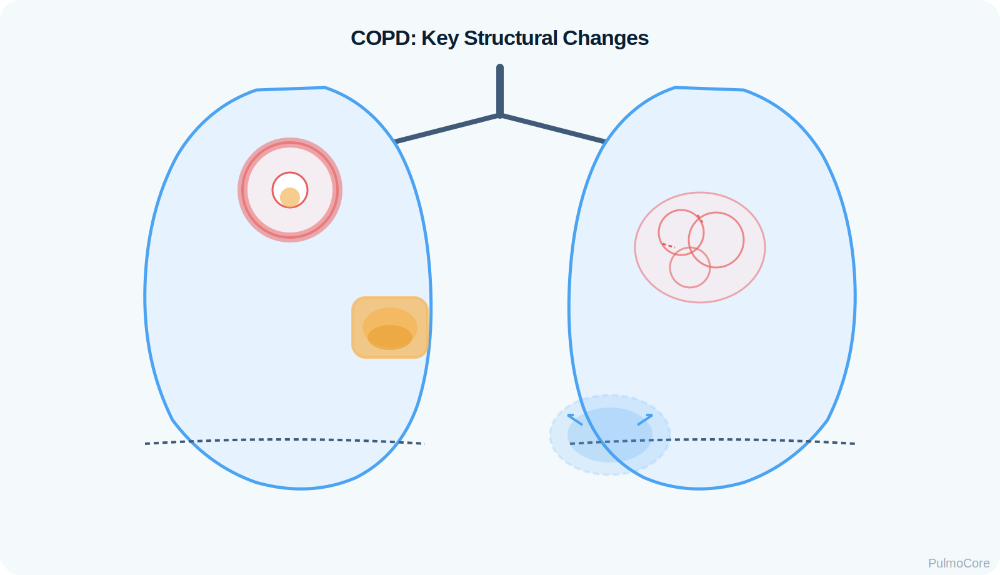
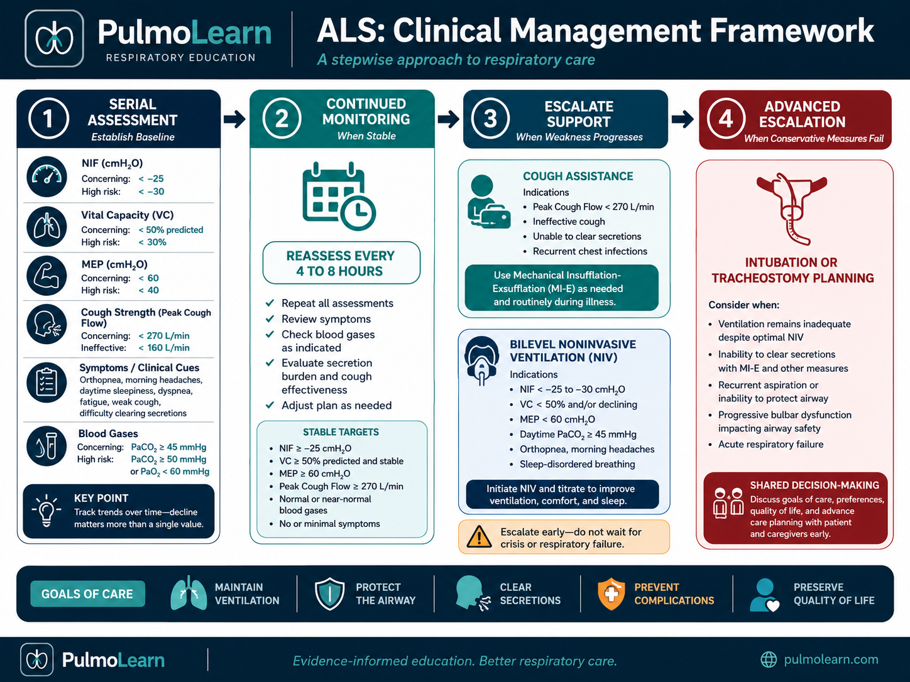

RT Clinical Connection
For RTs, COPD is not just a diagnosis. It is a pattern of problems to monitor: airflow limitation, oxygenation, ventilation, work of breathing, breath sounds, secretion burden, and the patient’s response to therapy.
COPD is a chronic obstructive lung disease that causes persistent airflow limitation, increased work of breathing, air trapping, and impaired gas exchange. This module focuses on the RT-level knowledge needed to recognize, assess, manage, and escalate care for patients with COPD.
By the end of this COPD module, learners should be able to connect disease mechanisms to bedside assessment, diagnostic interpretation, treatment decisions, and escalation of care.
Watch this quick overview before moving into the disease snapshot.
COPD is a long-term obstructive lung disease in which airflow out of the lungs becomes limited. The main issue is difficulty getting air out, not simply difficulty getting air in. This can lead to air trapping, hyperinflation, increased work of breathing, and impaired gas exchange.
For RTs, COPD is not just a diagnosis. It is a pattern of problems to monitor: airflow limitation, oxygenation, ventilation, work of breathing, breath sounds, secretion burden, and the patient’s response to therapy.
Immediately associate COPD with an obstructive PFT pattern, reduced FEV₁/FVC, air trapping, prolonged exhalation, hypoxemia from V/Q mismatch, possible hypercapnia, careful oxygen titration, bronchodilators, and BiPAP consideration during acute ventilatory failure.
Which statement best describes the core airflow problem in COPD?
This section explains what physically changes in COPD and why those changes cause the clinical findings RTs see at the bedside.
In healthy lungs, air flows into the lungs during inhalation and flows back out during exhalation. During normal exhalation, the diaphragm relaxes, the lungs recoil inward, air moves out through open airways, carbon dioxide is removed, and the lungs return closer to resting volume before the next breath.
| COPD Change | What Happens | Why It Matters |
|---|---|---|
| Airway inflammation | Airway walls become irritated and swollen. | Narrower airways increase airflow resistance. |
| Excess mucus | Goblet cells and mucus glands produce more secretions. | Mucus can obstruct airways and increase infection risk. |
| Small airway narrowing | Bronchioles become narrowed, inflamed, or plugged. | Air has more difficulty leaving the lungs. |
| Alveolar destruction | Alveolar walls break down. | Less surface area is available for gas exchange. |
| Loss of elastic recoil | The lungs lose some ability to spring back during exhalation. | Small airways are more likely to collapse during exhalation. |
Air trapping happens when a patient cannot fully exhale before the next breath begins. Narrowed airways, mucus obstruction, airway inflammation, loss of elastic recoil, and small airway collapse all limit airflow out of the lungs.
COPD can impair gas exchange because ventilation and perfusion are not evenly matched. Some lung regions receive less airflow because of obstruction, mucus, or alveolar damage, while blood may still pass through those poorly ventilated areas. This V/Q mismatch commonly causes hypoxemia. CO₂ retention becomes more likely in advanced disease, respiratory muscle fatigue, acute exacerbation, or inadequate alveolar ventilation.
Do not judge COPD severity by SpO₂ alone. Assess respiratory rate, work of breathing, breath sounds, mental status, and ABG/VBG trends when available.
Click each hotspot to reveal how that structure contributes to COPD.

COPD is an umbrella term. Two common patterns are chronic bronchitis and emphysema. Many patients have features of both, but the distinction helps students connect symptoms, assessment findings, imaging clues, and treatment priorities.
| Feature | Chronic Bronchitis | Emphysema |
|---|---|---|
| Main location | Airways | Alveoli |
| Primary pathologic feature | Airway inflammation and mucus | Alveolar wall destruction |
| Main airflow issue | Airways narrowed or blocked by inflammation/mucus | Loss of recoil and airway collapse during exhalation |
| Cough | Chronic productive cough | Often less productive |
| Breath sounds | Rhonchi, wheezes, coarse sounds, diminished sounds | Diminished sounds, prolonged exhalation |
| Imaging clue | Increased bronchovascular markings may be seen | Hyperinflation, flattened diaphragm, hyperlucency |
| RT concern | Secretion burden and infection/exacerbation risk | Air trapping, dyspnea, and reduced reserve |
| Board clue | Productive cough for years | Barrel chest, thin appearance, diminished breath sounds |
Older labels such as “blue bloater” and “pink puffer” are oversimplified and can be misleading. It is better to teach the underlying pattern: mucus/inflammation-dominant COPD versus alveolar destruction/recoil-loss-dominant COPD.
COPD usually develops after repeated injury to the lungs over time. Cigarette smoking is the most common risk factor, but COPD can also occur in people who never smoked, especially with long-term exposure to inhaled irritants, occupational hazards, biomass smoke, asthma history, family history, or alpha-1 antitrypsin deficiency.
| Risk Factor | Why It Matters | Modifiable? |
|---|---|---|
| Cigarette smoking | Most common COPD risk factor and major driver of chronic airway injury. | Yes |
| Secondhand smoke | Adds repeated airway irritant exposure. | Usually |
| Occupational dusts/fumes | Can injure airways over years. | Sometimes |
| Biomass fuel exposure | Important in poorly ventilated environments. | Sometimes |
| Asthma history | Chronic airway inflammation/hyperresponsiveness can increase risk. | Partly |
| Alpha-1 antitrypsin deficiency | Genetic risk for early emphysema, especially with smoking. | No, but risk can be reduced |
Alpha-1 antitrypsin deficiency is a genetic condition that can increase the risk of COPD, especially emphysema. Consider it when COPD or emphysema appears at a younger age, with little or no smoking history, with family history of early lung disease, or with basilar emphysema patterns depending on imaging description.
Exacerbations may be triggered by viral respiratory infection, bacterial infection, air pollution or smoke exposure, poor medication adherence, cold air or weather changes, heart failure, pulmonary embolism, pneumonia, or other comorbid illness.
Choose the best category for each item, then check your answers.
This section focuses on what the RT may see, hear, measure, and recognize in a patient with COPD. The goal is to determine whether the patient is stable, experiencing an exacerbation, oxygenating poorly, ventilating poorly, or tiring out.
| Finding Type | What the RT May See |
|---|---|
| Symptoms | Dyspnea, chronic cough, sputum production, wheezing, fatigue, activity intolerance. |
| Appearance | Tripod position, pursed-lip breathing, barrel-shaped chest, accessory muscle use, short phrases. |
| Breath sounds | Diminished breath sounds, wheezing, rhonchi/coarse sounds, prolonged expiratory phase, silent chest. |
| Cough/sputum | Chronic productive cough, increased sputum, thicker secretions, purulent sputum, weak cough. |
| Oxygenation clues | Low SpO₂, low PaO₂, cyanosis, exertional desaturation. |
| Ventilation clues | Rising PaCO₂, falling pH, confusion, drowsiness, fatigue, shallow breathing. |
A COPD patient who becomes sleepy, quiet, confused, or less responsive can be more concerning than a visibly anxious patient. This may signal worsening ventilation, rising CO₂, or respiratory muscle fatigue.
Respiratory therapists manage COPD exacerbations by assessing baseline respiratory status, identifying signs of acute ventilatory failure, supporting oxygenation and bronchodilation, reassessing response, and escalating support if gas exchange worsens.

NBRC-style COPD questions commonly test whether the RT recognizes worsening hypercapnia, balances oxygen therapy appropriately, supports ventilation, reassesses gas exchange, and escalates before complete ventilatory failure develops.
Select the steps in the best general order for managing a moderate to severe COPD exacerbation.
Diagnostic data helps confirm airflow obstruction, assess oxygenation and ventilation, identify exacerbation severity, and detect complications or alternate causes of dyspnea.
Before focusing on tests, the RT should determine the patient’s baseline, whether dyspnea is worse than usual, whether sputum has changed, whether the patient can speak normally, whether air movement is adequate, and whether mental status or oxygen requirement is changing.
| Pattern | Meaning |
|---|---|
| High PaCO₂ + near-normal pH + high HCO₃⁻ | Chronic compensated respiratory acidosis. |
| High PaCO₂ + low pH | Acute respiratory acidosis. |
| High PaCO₂ + low pH + high HCO₃⁻ | Acute-on-chronic respiratory acidosis. |
| Low PaO₂ | Hypoxemia. |
| PFT Finding | COPD Pattern |
|---|---|
| FEV₁ | Decreased. |
| FVC | Normal or decreased. |
| FEV₁/FVC | Decreased. |
| Residual volume | Increased from air trapping. |
| Total lung capacity | May be increased with hyperinflation. |
| DLCO | Often decreased in emphysema; may be normal in chronic bronchitis. |
| GOLD Grade | FEV₁ % Predicted | Airflow Limitation |
|---|---|---|
| GOLD 1 | ≥80% | Mild |
| GOLD 2 | 50–79% | Moderate |
| GOLD 3 | 30–49% | Severe |
| GOLD 4 | <30% | Very severe |
GOLD spirometric grades describe airflow limitation using FEV₁ percent predicted, but COPD treatment planning also considers symptoms, exacerbation history, hospitalizations, oxygenation, ventilation, comorbidities, and current clinical status.
The key question is not simply “Does this patient have COPD?” The key question is whether the patient is maintaining oxygenation and ventilation or moving toward respiratory failure.
| Red Flag | Why It Matters |
|---|---|
| New confusion, drowsiness, or decreased responsiveness | May indicate CO₂ retention, severe hypoxemia, or fatigue. |
| Rising PaCO₂ with falling pH | Suggests acute ventilatory failure. |
| Silent chest or very poor air movement | Severe obstruction or respiratory muscle fatigue. |
| Inability to speak full sentences | Significant respiratory distress. |
| Sudden unilateral decreased breath sounds | Consider pneumothorax. |
| No improvement after initial therapy | Treatment failure; reassess and escalate. |
NIV/BiPAP may be considered when the patient has increased work of breathing, respiratory acidosis, elevated PaCO₂ with low pH, persistent dyspnea despite initial therapy, accessory muscle use, and the ability to protect the airway and cooperate with the interface.
COPD management depends on whether the patient is stable, experiencing an exacerbation, or progressing toward respiratory failure. The RT should focus on immediate priorities, respiratory care interventions, monitoring response, and escalation.
Assess airway, breathing, circulation, oxygenation, ventilation, breath sounds, work of breathing, mental status, and response to therapy. Do not treat the monitor only; treat the patient’s overall respiratory status.
Oxygen should be given when the patient is hypoxemic, but it should be titrated to the ordered or appropriate target range while monitoring ventilation and mental status. The concern is not oxygen itself; the concern is uncontrolled oxygen without monitoring.
| Class | Example | Why It Helps |
|---|---|---|
| Short-acting beta agonist | Albuterol | Relaxes bronchial smooth muscle. |
| Short-acting anticholinergic | Ipratropium | Reduces bronchoconstriction mediated by vagal tone. |
| Long-acting bronchodilators | LABA/LAMA | Maintenance control in stable COPD. |
Corticosteroids may be used during exacerbations to reduce airway inflammation. Antibiotics may be used when bacterial infection is suspected. Airway clearance may help selected patients with retained secretions, weak cough, coarse/rhonchi breath sounds, mucus plugging, recurrent infections, or bronchiectasis overlap.
During COPD exacerbation, NIV can reduce work of breathing, improve alveolar ventilation, support respiratory muscles, improve pH when ventilation improves, and sometimes prevent intubation when appropriate.
Long-term COPD management includes maintenance inhalers, smoking cessation, pulmonary rehabilitation, vaccination awareness, long-term oxygen therapy for qualifying chronic hypoxemia, activity support, nutrition support, and an exacerbation action plan.
The RT is central to COPD assessment, treatment delivery, monitoring, education, and escalation. The RT should assess respiratory rate and pattern, work of breathing, breath sounds, cough effectiveness, sputum changes, oxygen device/settings, SpO₂, mental status, baseline status, and response to therapy.
| RT Task | What to Assess or Do | Why It Matters |
|---|---|---|
| Assess ventilation | RR, pattern, PaCO₂, pH, mental status. | Detects CO₂ retention or fatigue. |
| Assess oxygenation | SpO₂, PaO₂, cyanosis, oxygen need. | Identifies hypoxemia and response. |
| Evaluate breath sounds | Wheezes, rhonchi, diminished sounds, silent chest. | Guides therapy and escalation. |
| Monitor response | Pre/post therapy data. | Determines effectiveness. |
| Educate patient | Inhaler technique, oxygen safety, triggers, action plan. | Supports long-term control. |
Report new confusion or drowsiness, rising PaCO₂ with falling pH, silent chest, increasing oxygen requirement, no improvement after bronchodilator/NIV, sudden unilateral breath sound changes, new fever/crackles/infiltrate, or hemodynamic instability.
This guided case reveals one clinical stage at a time. Learners make an RT decision, receive feedback, and then continue to the next stage.
A 68-year-old patient with a history of COPD arrives in the emergency department with worsening shortness of breath, increased cough, thicker yellow sputum, and increased rescue inhaler use.
Decision Question: What should the RT assess or address first?
The patient is placed on controlled oxygen per protocol and receives bronchodilator therapy. SpO₂ improves, but the patient remains tachypneic and appears more tired.
Decision Question: How should the RT interpret this ABG?
The patient remains alert enough to follow commands but is using accessory muscles and can only speak in short phrases. There is no vomiting, facial trauma, or inability to protect the airway.
Decision Question: What respiratory support should be considered?
The patient is started on NIV and reassessed 30 minutes later.
Decision Question: What does this response suggest?
Answer each question to complete this activity. Answer choices shuffle each time the lesson opens.
A patient with COPD has prolonged exhalation and air trapping. Which mechanism best explains this finding?
A patient has confirmed COPD and an FEV₁ of 42% predicted. Which GOLD spirometric grade best fits?
A COPD patient has pH 7.26 / PaCO₂ 72 / HCO₃⁻ 31 / PaO₂ 58. Which interpretation is most accurate?
COPD is a chronic obstructive disease that makes it hard to move air out of the lungs. Think: obstruction → incomplete exhalation → air trapping → increased work of breathing.
They are best understood as two common COPD patterns. Chronic bronchitis mainly affects the airways, while emphysema mainly affects the alveoli. Many real patients have features of both.
No. CO₂ retention is more likely in advanced disease, severe exacerbation, respiratory muscle fatigue, or inadequate alveolar ventilation.
SpO₂ estimates oxygenation, but it does not measure ventilation or CO₂ removal. A patient may have acceptable oxygen saturation while PaCO₂ rises and pH falls.
No. Oxygen should not be withheld from a hypoxemic COPD patient. The concern is excessive or uncontrolled oxygen without monitoring, especially in patients vulnerable to hypercapnia.
BiPAP can reduce work of breathing and support ventilation. It may help lower PaCO₂ and improve pH when the patient can protect the airway and tolerate the mask.
GOLD spirometric grades describe airflow limitation using FEV₁ percent predicted after obstruction is confirmed. Treatment planning also considers symptoms, exacerbation history, hospitalizations, and current clinical status.
Sudden unilateral absent breath sounds, sharp chest pain, fever with new infiltrate, frothy sputum, or unexplained severe hypoxemia should prompt concern for another condition or complication.
COPD is a chronic obstructive lung disease that causes persistent airflow limitation. The main airflow problem is difficulty exhaling fully. This can cause air trapping, hyperinflation, increased work of breathing, V/Q mismatch, hypoxemia, and possible CO₂ retention in advanced disease or exacerbation.
Click the card to flip it. Use Term → Definition or Definition → Term mode. Mark known cards to move them into the completed pile.